<!DOCTYPE html>
<html lang="ja" dir="ltr">
<head>
<meta charset="UTF-8">
<title>kdg_list_Lv03_Ca014</title>
<meta name="viewport" content="width=device-width,initial-scale=1">
</head>
<body>
<h1>Lv03_Ca014 -- 全50問</h1>
＜＜<span><a href='kdg_list_Lv03_Ca013.html'>Lv03_Ca013</a></span>｜<a href='index.html'>●</a>｜<span><a href='kdg_list_Lv04.html'>Lv04</a></span>＞＞
<table border=1>
<thead>
<tr>
<th>ID</th>
<th>問題</th>
<th>答え</th>
<th>解説</th>
</tr>
</thead>
<tbody>
<tr>
<td>Lv03_Ca014_0001</td>
<td><a href='kanji_problems/png/Lv03_Ca014_0001.png'>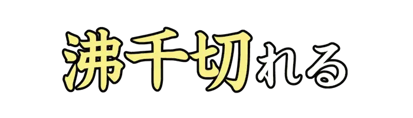</a></td>
<td>ぶちぎ</td>
<td>突然、堪忍袋の緒が切れたように怒り出すこと。マジギレ。</td>
</tr>
<tr>
<td>Lv03_Ca014_0002</td>
<td><a href='kanji_problems/png/Lv03_Ca014_0002.png'></a></td>
<td>めがね</td>
<td>レンズを用いて視力を補強する器具。</td>
</tr>
<tr>
<td>Lv03_Ca014_0003</td>
<td><a href='kanji_problems/png/Lv03_Ca014_0003.png'>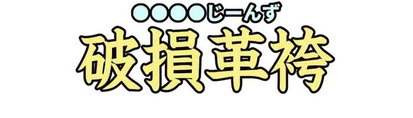</a></td>
<td>だめーじじーんず</td>
<td>デニム生地などで作られたボトムスを、切ったり破いたりして傷つけたもの。</td>
</tr>
<tr>
<td>Lv03_Ca014_0004</td>
<td><a href='kanji_problems/png/Lv03_Ca014_0004.png'></a></td>
<td>いかろ</td>
<td>ギリシア神話に登場する人物。蜜蝋でできた翼で空を飛べるとされる。</td>
</tr>
<tr>
<td>Lv03_Ca014_0005</td>
<td><a href='kanji_problems/png/Lv03_Ca014_0005.png'></a></td>
<td>かれんだー</td>
<td>日付や曜日などを表形式などで表示し、容易に確認できるもの。</td>
</tr>
<tr>
<td>Lv03_Ca014_0006</td>
<td><a href='kanji_problems/png/Lv03_Ca014_0006.png'></a></td>
<td>あーね</td>
<td>俗に『ああ、なるほどね』という意味を表す若者言葉。</td>
</tr>
<tr>
<td>Lv03_Ca014_0007</td>
<td><a href='kanji_problems/png/Lv03_Ca014_0007.png'>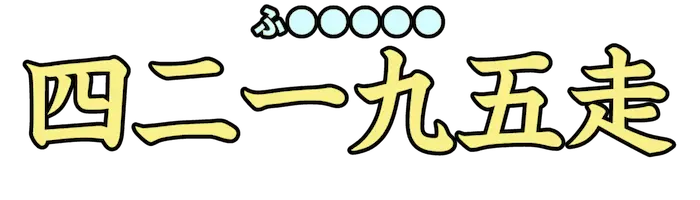</a></td>
<td>ふるまらそん</td>
<td>陸上競技の長距離走のひとつで、４２.１９５kmの公道コースを使った競技。</td>
</tr>
<tr>
<td>Lv03_Ca014_0008</td>
<td><a href='kanji_problems/png/Lv03_Ca014_0008.png'>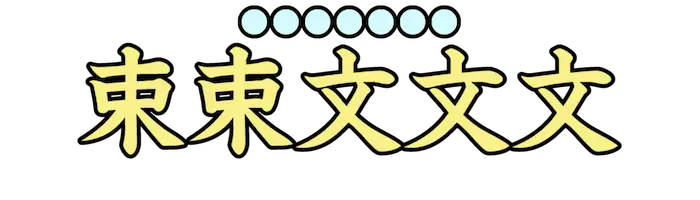</a></td>
<td>にそくさんもん</td>
<td>数が多くても値段が非常に安いこと。</td>
</tr>
<tr>
<td>Lv03_Ca014_0009</td>
<td><a href='kanji_problems/png/Lv03_Ca014_0009.png'>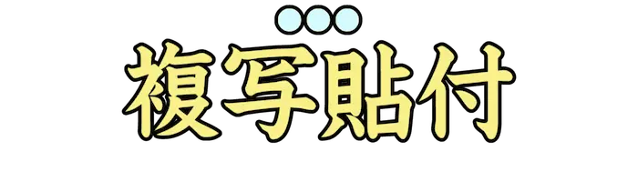</a></td>
<td>こぴぺ</td>
<td>『コピー＆ペースト』の略。データを指定し複製を別の場所へ貼り付ける動作のこと。</td>
</tr>
<tr>
<td>Lv03_Ca014_0010</td>
<td><a href='kanji_problems/png/Lv03_Ca014_0010.png'></a></td>
<td>すきすきじい</td>
<td>年配の男性が好きな人。また、何に対しても好意的な年配の男性。</td>
</tr>
<tr>
<td>Lv03_Ca014_0011</td>
<td><a href='kanji_problems/png/Lv03_Ca014_0011.png'></a></td>
<td>すらいむ</td>
<td>ねばりのある液状のもの。また、人工的に造られた、ゼリー状や粘液状の玩具。</td>
</tr>
<tr>
<td>Lv03_Ca014_0012</td>
<td><a href='kanji_problems/png/Lv03_Ca014_0012.png'>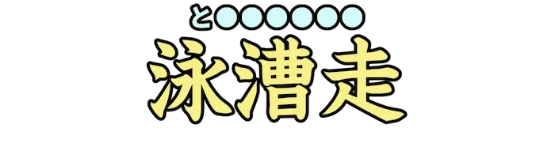</a></td>
<td>とらいあすろん</td>
<td>水泳、自転車ロードレース、長距離走の順番で、連続して行う耐久競技。</td>
</tr>
<tr>
<td>Lv03_Ca014_0013</td>
<td><a href='kanji_problems/png/Lv03_Ca014_0013.png'></a></td>
<td>おーむ</td>
<td>電気抵抗を表す単位。『<Ω|オーム>』とも。</td>
</tr>
<tr>
<td>Lv03_Ca014_0014</td>
<td><a href='kanji_problems/png/Lv03_Ca014_0014.png'></a></td>
<td>こんぼ</td>
<td>ゲームにおいて、特定の操作をミスせずに連続して行っている状態を表す単位。</td>
</tr>
<tr>
<td>Lv03_Ca014_0015</td>
<td><a href='kanji_problems/png/Lv03_Ca014_0015.png'>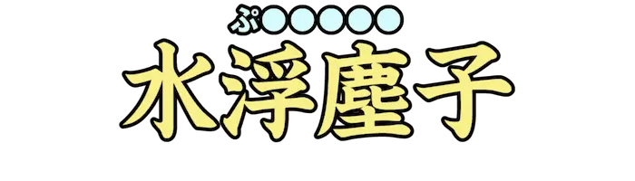</a></td>
<td>ぷらんくとん</td>
<td>水中を漂って生活する、小さな生物の総称。『ゾウミジンコ』『ノロ』など。</td>
</tr>
<tr>
<td>Lv03_Ca014_0016</td>
<td><a href='kanji_problems/png/Lv03_Ca014_0016.png'></a></td>
<td>れあめたる</td>
<td>使用、流通量が少ない非鉄金属のこと。『テルル』『ガドリニウム』など。</td>
</tr>
<tr>
<td>Lv03_Ca014_0017</td>
<td><a href='kanji_problems/png/Lv03_Ca014_0017.png'></a></td>
<td>くっちゃべ</td>
<td>くだらない雑談をすること。</td>
</tr>
<tr>
<td>Lv03_Ca014_0018</td>
<td><a href='kanji_problems/png/Lv03_Ca014_0018.png'>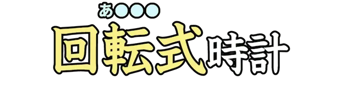</a></td>
<td>あなろぐ</td>
<td>文字板の上で時針、分針、秒針が動くことで時刻が表示されるタイプの時計。</td>
</tr>
<tr>
<td>Lv03_Ca014_0019</td>
<td><a href='kanji_problems/png/Lv03_Ca014_0019.png'>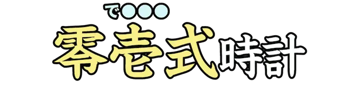</a></td>
<td>でじたる</td>
<td>デジタル式の表示装置をもつタイプの時計。</td>
</tr>
<tr>
<td>Lv03_Ca014_0020</td>
<td><a href='kanji_problems/png/Lv03_Ca014_0020.png'>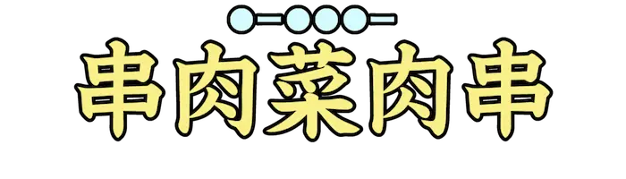</a></td>
<td>ばーべきゅー</td>
<td>炭などの弱火で肉や野菜、魚介類などをじっくり焼いて料理する調理法、行為。</td>
</tr>
<tr>
<td>Lv03_Ca014_0021</td>
<td><a href='kanji_problems/png/Lv03_Ca014_0021.png'></a></td>
<td>えいぷりるふーる</td>
<td>一年に一度だけ、嘘を言ってはいけない日。</td>
</tr>
<tr>
<td>Lv03_Ca014_0022</td>
<td><a href='kanji_problems/png/Lv03_Ca014_0022.png'>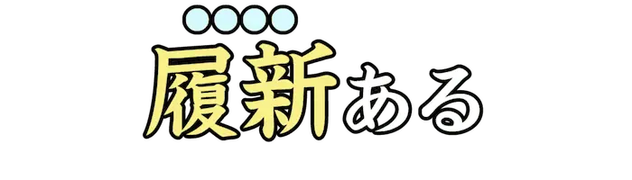</a></td>
<td>りにゅー</td>
<td>古くなったものを改装、再開発すること。</td>
</tr>
<tr>
<td>Lv03_Ca014_0023</td>
<td><a href='kanji_problems/png/Lv03_Ca014_0023.png'>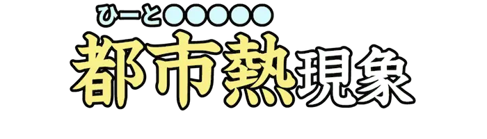</a></td>
<td>ひーとあいらんど</td>
<td>郊外に比べ、都市部ほど気温が高くなる現象のこと。</td>
</tr>
<tr>
<td>Lv03_Ca014_0024</td>
<td><a href='kanji_problems/png/Lv03_Ca014_0024.png'>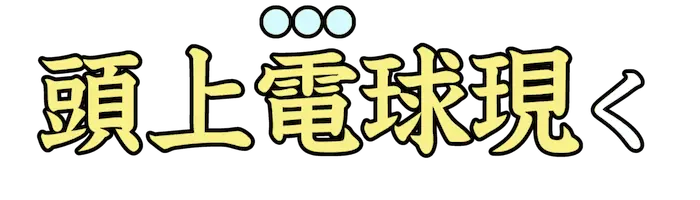</a></td>
<td>ひらめ</td>
<td>考えや思いが瞬間的に思い浮かぶ。</td>
</tr>
<tr>
<td>Lv03_Ca014_0025</td>
<td><a href='kanji_problems/png/Lv03_Ca014_0025.png'>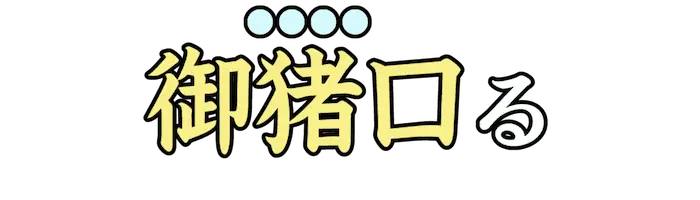</a></td>
<td>おちょく</td>
<td>からかったり、ばかにする。</td>
</tr>
<tr>
<td>Lv03_Ca014_0026</td>
<td><a href='kanji_problems/png/Lv03_Ca014_0026.png'></a></td>
<td>ばぐ</td>
<td>ゲームにおける、開発者の想定外の挙動。※画像の表示は正常です</td>
</tr>
<tr>
<td>Lv03_Ca014_0027</td>
<td><a href='kanji_problems/png/Lv03_Ca014_0027.png'></a></td>
<td>ぶるーばっく</td>
<td>クロマキー合成のために、背景を青くした画像や動画素材のこと。また、その背景。</td>
</tr>
<tr>
<td>Lv03_Ca014_0028</td>
<td><a href='kanji_problems/png/Lv03_Ca014_0028.png'>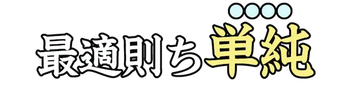</a></td>
<td>しんぷる</td>
<td>単純素朴であることが最良である、という英語(？)の表現。</td>
</tr>
<tr>
<td>Lv03_Ca014_0029</td>
<td><a href='kanji_problems/png/Lv03_Ca014_0029.png'>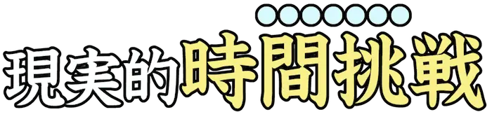</a></td>
<td>たいむあたっく</td>
<td>ゲームを最初からプレイし、どれだけ早くクリアできるかを競う遊び方。ＲＴＡ・</td>
</tr>
<tr>
<td>Lv03_Ca014_0030</td>
<td><a href='kanji_problems/png/Lv03_Ca014_0030.png'>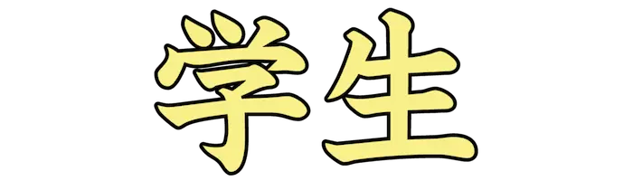</a></td>
<td>だいがくせい</td>
<td>大学に入学、在籍している学生のこと。※画像の表示は正常です</td>
</tr>
<tr>
<td>Lv03_Ca014_0031</td>
<td><a href='kanji_problems/png/Lv03_Ca014_0031.png'></a></td>
<td>れいんぼーぶりっじ</td>
<td>東京都の港区芝浦地区と台場地区を結ぶ吊り橋。</td>
</tr>
<tr>
<td>Lv03_Ca014_0032</td>
<td><a href='kanji_problems/png/Lv03_Ca014_0032.png'>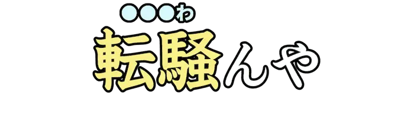</a></td>
<td>てんやわ</td>
<td>各人が勝手にふるまって騒ぎ立てるさま。</td>
</tr>
<tr>
<td>Lv03_Ca014_0033</td>
<td><a href='kanji_problems/png/Lv03_Ca014_0033.png'>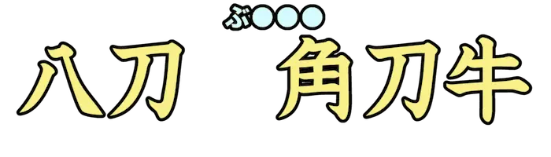</a></td>
<td>ぶんかい</td>
<td>ひとつのものが要素ごとに分かれること。『分解』が分解された姿とされる。</td>
</tr>
<tr>
<td>Lv03_Ca014_0034</td>
<td><a href='kanji_problems/png/Lv03_Ca014_0034.png'>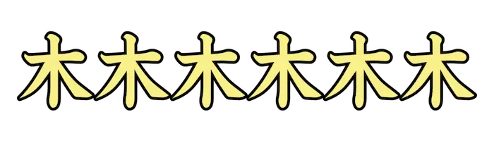</a></td>
<td>ろっぽんぎ</td>
<td>東京都港区の町名。六本木ヒルズをはじめとした繁華街。</td>
</tr>
<tr>
<td>Lv03_Ca014_0035</td>
<td><a href='kanji_problems/png/Lv03_Ca014_0035.png'>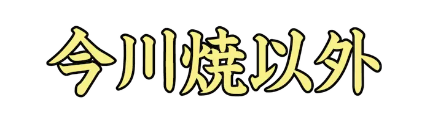</a></td>
<td>べいくどもちょちょ</td>
<td>弾かれたら別のをお答えください。</td>
</tr>
<tr>
<td>Lv03_Ca014_0036</td>
<td><a href='kanji_problems/png/Lv03_Ca014_0036.png'>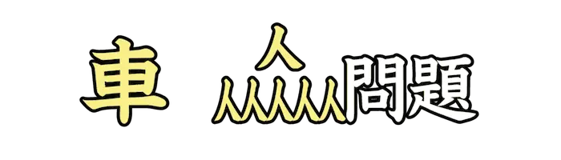</a></td>
<td>とろっこ</td>
<td>個人を救うため他者を犠牲にするかどうかを扱った、倫理学上の問題のひとつ。</td>
</tr>
<tr>
<td>Lv03_Ca014_0037</td>
<td><a href='kanji_problems/png/Lv03_Ca014_0037.png'>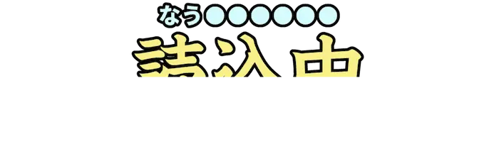</a></td>
<td>なうろーでぃんぐ</td>
<td>主に、ゲームなどでデータの読C[7][LOADING…]</td>
</tr>
<tr>
<td>Lv03_Ca014_0038</td>
<td><a href='kanji_problems/png/Lv03_Ca014_0038.png'></a></td>
<td>いなか</td>
<td>『か』を空けていなかったら、出題の疎通が難しかったとされる。</td>
</tr>
<tr>
<td>Lv03_Ca014_0039</td>
<td><a href='kanji_problems/png/Lv03_Ca014_0039.png'>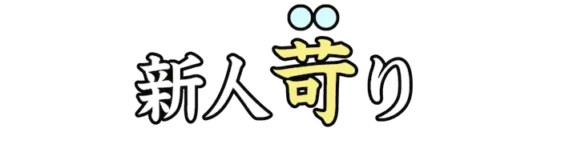</a></td>
<td>いび</td>
<td>新人に対して、無理なことをして苛むこと。また、そのような人。</td>
</tr>
<tr>
<td>Lv03_Ca014_0040</td>
<td><a href='kanji_problems/png/Lv03_Ca014_0040.png'></a></td>
<td>さくがほうかい</td>
<td>アニメ作品の作画が、何らかの要因により様相が変貌しているように見えるたとえ。</td>
</tr>
<tr>
<td>Lv03_Ca014_0041</td>
<td><a href='kanji_problems/png/Lv03_Ca014_0041.png'></a></td>
<td>りすなー</td>
<td>聴衆。動画配信では、視聴者のことも含めてこう呼ばれることが多い。</td>
</tr>
<tr>
<td>Lv03_Ca014_0042</td>
<td><a href='kanji_problems/png/Lv03_Ca014_0042.png'></a></td>
<td>ぷかぷか</td>
<td>軽い物体が、水上に漂うさま。</td>
</tr>
<tr>
<td>Lv03_Ca014_0043</td>
<td><a href='kanji_problems/png/Lv03_Ca014_0043.png'></a></td>
<td>かにかま</td>
<td>『かにかまぼこ』の略。風味や食感、外見を本物のカニの身に寄せて作られる食べ物。</td>
</tr>
<tr>
<td>Lv03_Ca014_0044</td>
<td><a href='kanji_problems/png/Lv03_Ca014_0044.png'></a></td>
<td>えも</td>
<td>心が揺さぶられて、何とも言えない気持ちになること。エモーショナル。</td>
</tr>
<tr>
<td>Lv03_Ca014_0045</td>
<td><a href='kanji_problems/png/Lv03_Ca014_0045.png'></a></td>
<td>かーすと</td>
<td>インド社会などにおける、特有な身分制度。世界史で学ぶこともあるとされる。</td>
</tr>
<tr>
<td>Lv03_Ca014_0046</td>
<td><a href='kanji_problems/png/Lv03_Ca014_0046.png'></a></td>
<td>かんが</td>
<td>あれやこれやと思いをめぐらす。</td>
</tr>
<tr>
<td>Lv03_Ca014_0047</td>
<td><a href='kanji_problems/png/Lv03_Ca014_0047.png'></a></td>
<td>すいそ</td>
<td>エクストラモードではない点に注意。</td>
</tr>
<tr>
<td>Lv03_Ca014_0048</td>
<td><a href='kanji_problems/png/Lv03_Ca014_0048.png'></a></td>
<td>しょっきんぐぴんく</td>
<td>強い印象を与える鮮明なピンク色。</td>
</tr>
<tr>
<td>Lv03_Ca014_0049</td>
<td><a href='kanji_problems/png/Lv03_Ca014_0049.png'></a></td>
<td>ふぁいな</td>
<td>物事が終着点に達している状態であることを示す英語表現。</td>
</tr>
<tr>
<td>Lv03_Ca014_0050</td>
<td><a href='kanji_problems/png/Lv03_Ca014_0050.png'></a></td>
<td>だっこにおんぶ</td>
<td>他人の好意に甘えて、迷惑を顧みずに頼りきることのたとえ。</td>
</tr>
</tbody>
</table>
</body>
</html>
